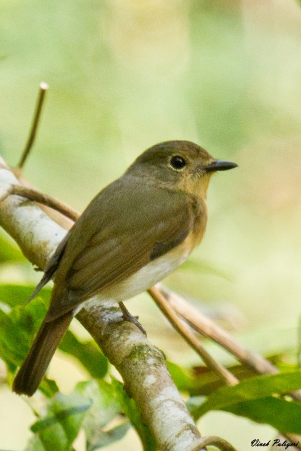

ब्लू-थ्रोटेड फ्लाईकैचरBlue-throated Blue Flycatcher
Cyornis rubeculoides · Muscicapidae · BRD-0329

- Scientific name वैज्ञानिक नाम
- Cyornis rubeculoides (Vigors, 1831)
- Family कुल
- Muscicapidae
- Hindi हिंदी
- ब्लू-थ्रोटेड फ्लाईकैचर
- Local names स्थानीय नाम
- chutki, blue-throated flycatcher, blue-throated blue flycatcher
- Status here यहाँ की स्थिति
- native
- Movement आवागमन
- Passage migrant
- Known from कहाँ दर्ज
- Others have published records from the Basti–Ayodhya districts बस्ती–अयोध्या के ज़िलों से दूसरों के प्रकाशित अभिलेख
- IUCN IUCN
- LC
- Review समीक्षा
- not yet reviewed
When to look कब देखें
Passage migrant मार्ग प्रवासी. Expected mainly in September, October, November, March, April. मुख्यतः सितंबर, अक्टूबर, नवंबर, मार्च, अप्रैल में अपेक्षित।
Regular passage migrant across the plain in autumn and spring; occasional winter visitor in dense orchards. All migrants and visitors →
Tell it apart from इनसे अलग पहचानें
ब्लू-थ्रोटेड फ्लाईकैचर / Blue-throated Blue Flycatcher
Cyornis rubeculoides (Vigors, 1831) — Muscicapidae
ब्लू-थ्रोटेड फ्लाईकैचर — तराई और मैदानी इलाकों के पुराने बागों तथा नदियों के किनारे घने पेड़ों की छांव में दिखने वाला एक छोटा, आकर्षक और चंचल मक्खीमार पक्षी है। नर का ऊपरी शरीर गहरा नीला और माथा चमकीला आसमानी-नीला होता है। इसके गले का मध्य भाग नीला होता है, जिसके ठीक नीचे सीना सुर्ख नारंगी-कत्थई और पेट एकदम सफेद होता है। यह पेड़ की निचली डालियों पर सीधा बैठकर अपनी पूंछ को हौले-हौले हिलाता है और हवा में उड़ते हुए छोटे कीड़ों को झपट्टा मारकर चोंच से पकड़ लेता है।
Quick Identification त्वरित पहचान
| Feature | Description |
|---|---|
| Habit | Small, upright-perching, shade-dwelling flycatcher of forest undergrowth |
| Upperparts | Deep rich indigo-blue in males; glowing cobalt-blue forehead and supercilium |
| Throat | Distinct blue chin and central throat forming a triangular wedge down the neck |
| Breast | Vivid ferruginous-orange or bright rufous breast contrasting with blue throat |
| Belly | Pure immaculate white abdomen and vent contrasting sharply with orange breast |
| Female | Cryptic olive-brown upperparts with rufous tail wash and buffy-orange breast |
| Posture | Sits upright on shaded low twigs, occasionally flicking and spreading the tail |
Field tip: Look in shaded bamboo clumps or overgrown mango groves during migration months. The dark blue upperparts, blue throat forming a wedge into the rich orange breast, and pure white belly distinguish the male from Tickell's Blue Flycatcher.
हिंदी:
नर का पूरा ऊपरी हिस्सा गहरा नीला, माथा चमकीला और गला नीला होता है।
सीना नारंगी और पेट सफेद होता है, जबकि मादा भूरे रंग की होती है।
यह डाल पर सीधा बैठकर अपनी पूंछ हिलाता है और हवा में कीड़े पकड़ता है।
Morphology आकारिकी
Measurements as given by Baker (1924):
| Measurement | Range |
|---|---|
| Wing | wing 65 to 75 mm. (Baker 1924 as Cyornis rubeculoides) |
The Blue-throated Blue Flycatcher is a small, compact muscicapid displaying delicate proportions. The adult male has a brilliant, glistening azure-blue forehead and superciliary band that gleams vividly in low light.
The lores, nasal plumes, and ocular region are velvety black. The mantle, scapulars, back, and rump are a rich, uniform ultramarine-blue. The chin, throat, and sides of the neck are deep blue, creating an inverted triangular blue throat patch that projects into the fiery ferruginous breast.
The lower breast transitions to pale orange-buff on the flanks, while the belly, vent, and under tail-coverts are pure white. The bill is black, broadened at the base with prominent rictal bristles. The eyes are large and dark hazel. Females have olive-brown upperparts, a rufous wash on the tail, and an unstreaked pale orange throat and breast.
Vocalisations. The territorial song is a delicate, sweet, descending musical cascade of silvery notes. During migration, it produces a dry, clicking tik-tik or metallic trrt call.
हिंदी:
इसके पंखों का फैलाव 65 से 75 मिमी तक होता है।
इसकी चोंच आधार पर चौड़ी और मजबूत होती है जिसके पास कीड़े पकड़ने वाले कड़े बाल होते हैं।
यह प्रवास के दौरान 'टिक-टिक' जैसी हल्की धातुई आवाज निकालता है।
Behaviour & Ecology व्यवहार और पारिस्थितिकी
Cyornis rubeculoides is an obligate shade-loving insectivore, preferring deep interior foliage, dense bamboo groves, and shaded nullahs. It maintains a characteristic upright stance on a low branch, often within a short distance of the ground.
It hunts by scanning the air and surrounding foliage with keen, large dark eyes. When an insect flies past, the bird launches into a rapid, silent sally, snatching the prey with a soft snap of its bill before looping back to the same or an adjacent perch. It frequently cocks its tail slightly and gives it an upward flick followed by a slow downward drift.
हिंदी:
यह हमेशा घने पत्तों की ठंडी छांव में रहना पसंद करता है और तेज धूप से बचता है।
यह डाल पर बैठकर नजर रखता है और हवा में उड़ते पतंगे को चपलता से पकड़ लेता है।
Life Cycle / Phenology जीवन चक्र
In the Himalayas between 2,000 and 7,000 feet, breeding takes place in April, May, and June (Baker 1924, p. 232). In winter and during passage, it moves across eastern and northern India.
The nest is a cup-shaped structure made of moss and moss roots, tucked inside a natural hollow in an earth bank, rock, or old tree stump. A small clutch of clay-brown eggs is laid and incubated for a few weeks until hatching. Both parents tend the chicks until they fledge.
हिंदी:
हिमालय में यह अप्रैल से जून के महीनों में प्रजनन करता है (बेकर 1924)।
सर्दियों और प्रवास के दौरान यह उत्तर व पूर्वी भारत के मैदानों से गुजरता है।
यह पेड़ के ठूंठ या मिट्टी के टीलों के खोखलों में काई से घोंसला बनाता है।
Host Plants or Prey आहार
The Blue-throated Blue Flycatcher is an insectivorous specialist that feeds on a variety of small, soft-bodied invertebrates:
- Small flying insects including dipteran flies, gnats, mosquitoes, and small winged ants
- Small moths, micro-lepidopterans, and caddisflies
- Soft caterpillars gleaned from the undersides of leaves
- Small leafhoppers and tiny spiders snatched from tree bark
हिंदी:
इसका मुख्य आहार मच्छर, छोटी मक्खियां, पतंगे, चींटियां, मकड़ियां और छोटी इल्लियां हैं।
Predators / Natural Enemies शत्रु व परभक्षी
Hawks, owls, and small carnivores take birds of this size. No source opened for this atlas names a specific predator of this bird.
हिंदी:
बाज़, उल्लू और छोटे मांसाहारी इस आकार के पक्षियों का शिकार करते हैं। इस एटलस के लिए खोले गए किसी स्रोत में इस पक्षी के किसी विशिष्ट शिकारी का नाम नहीं है।
Agricultural / Human Relevance कृषि व मानव संदर्भ
The Blue-throated Blue Flycatcher is an insectivore feeding on small flying insects and foliage invertebrates (Baker 1924, p. 232). It is protected under the Wildlife (Protection) Act, 1972.
हिंदी:
ब्लू-थ्रोटेड ब्लू फ्लाईकैचर छोटे उड़ने वाले कीड़ों और पत्तियों पर मिलने वाले कीटों को पकड़कर खाता है (बेकर 1924)। यह वन्यजीव (संरक्षण) अधिनियम, 1972 के तहत संरक्षित है।
Expected Locally स्थानीय रूप से अपेक्षित
Not a field record. Written from published accounts for eastern Uttar Pradesh. No confirmed local sighting yet — if you have seen it, that is what the atlas needs.
अभी तक स्थानीय पुष्टि नहीं। यह विवरण प्रकाशित स्रोतों से है, किसी अवलोकन से नहीं।
Search along shaded lower branches in old mango topes, bamboo groves, and canal banks during autumn and spring passage.
GBIF holds published records from these districts.
A first record would be a photograph of an adult with place and date, sent through the About page.
Distribution वितरण
Global and historical range: Breeds across the Himalayas from Pakistan and northern India through Nepal, Bhutan, and Myanmar into southern China. Winters in peninsular India, Sri Lanka, Bangladesh, and Southeast Asia.
Regional status: Regular passage migrant and occasional winterer in shaded orchards, canal woodlands, and riverine thickets across eastern Uttar Pradesh.
हिंदी:
यह हिमालय में प्रजनन करता है और सर्दियों में दक्षिण भारत तथा श्रीलंका जाता है।
अवध और पूर्वांचल के मैदानों में यह सितंबर-अक्टूबर और मार्च-अप्रैल में प्रवास के दौरान दिखाई देता है।
Research Questions शोध प्रश्न
- What are the seasonal arrival and departure peaks of Cyornis rubeculoides during autumn and spring passage across eastern Uttar Pradesh? / पूर्वांचल के मैदानों में इस मक्खीमार पक्षी के आने और जाने के मुख्य मौसमी सप्ताह कौन से हैं?
- How do passage flycatchers partition foraging strata when co-occurring with resident fantails and monarchs in mango groves? / पुराने बागों में अन्य कीटभक्षी पक्षियों के साथ यह पक्षी अपने शिकार के क्षेत्र का बंटवारा कैसे करता है?
- What is the stopover duration and refueling rate of individual passage migrants in agricultural tree islands?
- How do ambient autumn temperatures influence the speed of trans-Gangetic passage migration?
- What are the key microhabitat variables that determine daytime stopover site selection in fragmented rural landscapes?
Similar Species मिलती-जुलती प्रजातियाँ
| Species | How to tell apart | हिंदी | |
|---|---|---|---|
| [[white_rumped_shama\ | White-rumped Shama]] (Copsychus malabaricus) | Much larger songbird with long white-edged tail, white rump, and black throat; forest understory | शामा |
| [[crimson_sunbird\ | Crimson Sunbird]] (Aethopyga siparaja) | Diminutive canopy nectarivore with crimson plumage, curved bill, and active flower feeding | क्रिमसन सनबर्ड |
Field rule: The combination of deep blue upperparts, blue throat projecting like a wedge into the rich orange breast, and pure white belly identifies the male Blue-throated Blue Flycatcher.
हिंदी:
गहरा नीला ऊपरी शरीर, नारंगी सीने के बीच में नीले गले की पच्चर जैसा निशान और एकदम सफेद पेट इसकी खास पहचान हैं।
Taxonomy & Classification वर्गीकरण
Original description. Described by Nicholas Aylward Vigors in 1831 in Proceedings of the Committee of Science and Correspondence of the Zoological Society of London (pt. 1, p. 35), under the basionym "Phoenicura rubeculoides".
Synonyms and historical names. Stuart Baker (1924, p. 231) treated the species under Cyornis rubeculoides, noting the Bengali vernacular name "Chutki".
Subspecies. Multiple subspecies are recognized across Asia; northern Indian and Himalayan populations represent the nominate race Cyornis rubeculoides rubeculoides (Vigors, 1831).
Family and order placement. Order Passeriformes; family Muscicapidae (Old World flycatchers and chats); genus Cyornis.
IUCN status rationale. Evaluated as Least Concern (LC) on the IUCN Red List due to its extremely vast range and absence of evidence indicating rapid population declines.
हिंदी:
विगर्स ने 1831 में इसका वर्णन किया था। यह मस्किकैपिडे कुल का सदस्य है और संकटमुक्त (LC) है।
Photo Gallery फोटो गैलरी
No photos yet — add field photos to media/species/blue_throated_blue_flycatcher/ and run node scripts/sync_photos.js.
Photos needed आवश्यक फोटो
- [ ] Adult male perched upright showing blue throat wedge (नीला गला और नारंगी सीना दिखाता नर)
- [ ] Female perched in shaded foliage (छायादार पत्तों में बैठी मादा)
References संदर्भ
- Vigors, N. A. (1831). Proceedings of the Committee of Science and Correspondence of the Zoological Society of London, pt. 1, p. 35 (as "Phoenicura rubeculoides").
- Baker, E. C. S. (1924). The Fauna of British India, Including Ceylon and Burma. Birds. Vol. 2. Taylor & Francis, London, p. 231 (as Cyornis rubeculoides).
- Ali, S. & Ripley, S. D. (1987). Compact Handbook of the Birds of India and Pakistan. Oxford University Press, New Delhi.
- BirdLife International (2016). Cyornis rubeculoides. The IUCN Red List of Threatened Species 2016: e.T22735914A95120970.
- Wildlife (Protection) Act, 1972 (as amended in 2022). Government of India, Schedule II.
- GBIF Occurrence Data — Cyornis rubeculoides (Vigors, 1831), India (2025).
Source file: species/fauna/birds/blue_throated_blue_flycatcher.md